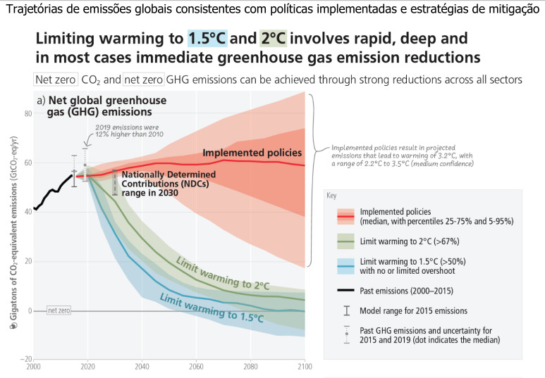
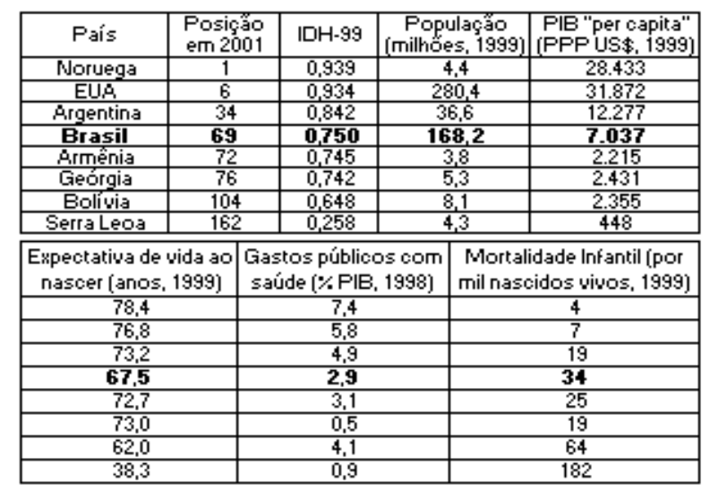

library(plotly)
library(magrittr) # bibliotecas necessárias
# 1) Obtendo os dados da internet
url <- "https://raw.githubusercontent.com/datasets/global-temp/refs/heads/main/data/annual.csv" # define o link para os dados
dados <- read.csv(url) # lê o arquivo dos dados
# 2) Construindo o gráfico com animação
plot_ly(dados, x = ~Year, y = ~Mean,
type = "bar",
marker = list(line = list(width = 10)),
frame = ~Year) %>%
animation_opts(
frame = 150, # Velocidade da animação
transition = 0,
redraw = TRUE
) %>%
layout(
title = "Flutuação da temperatura global",
xaxis = list(title = "Anos"),
yaxis = list(title = "Diferença de temperatura, C"))Animação em gráficos interativos
Objetivos:
1. Conhecer o potencial do “plotly” para criar animações interativas
2. Elaborar gráficos animados por importação de banco de dados
Além do aspecto puramente interativo de gráficos elaborados com o
plotly, o que já perfaz um grande diferencial ao preparo de materiais ilustrativos de conteúdos didáticos, a biblioteca ainda é capaz de rodar animações com os gráficos!
A animação se dá por meio de transições de uma imagem a outra de um gráfico quando se deseja observar o que ocorre com esse quando se altera uma variável (numérica ou categórica). O comando chave pra isso é
frame (quadro). A animação no plotly também serve para os 3 tipos de entrada de dados, ou seja: equações, vetores, datasets importados.
1 Elevação da temperatura média da Terra
Desnecessário mencionar os impactos recentes das mudanças climáticas no planeta em função da ação humana, incluindo uma elevação média da temperatura superficial do globo terrestre em decorrência de fatores como o efeito estufa.

Para observar melhor o gráfico, clique em Zoom que será aberta uma janela maior. Agora a parte “chique”: clique em PLAY e veja o que acontece. Você pode também selecionar qualquer período para a emissão, bastando usar a barra de rolagem do gráfico.
2 Expectativa de vida & Produto Interno Bruto
Um emprego bem interessante para o uso do
plot_ly em animação gráfica dá-se quando necessitamos apresentar vários dados sobre determinado tema. A isso dá-se no nome de dados multivariados. Ilustrando esse situação, digamos que se deseje oferecer informações variadas em um gráfico que envolva a relação entre o produto interno bruto de um país e a expectativa de vida de seus habitantes ao longo do tempo.

Para ilustrar a riqueza interativa que se pode obter pelo
plotly sobre a influência do produto interno bruto - PIB sobre a expectativa de vida, podemos importar um conjunto de dados da internet e criar um gráfico sobre essa relação, veja:
library(plotly)
# Obtendo os dados na internet
url <- read.csv("https://raw.githubusercontent.com/kirenz/datasets/refs/heads/master/gapminder.csv")
dadosExpVida <- url # atribuindo os dados a um objeto do `R`
# Criando o gráfico interativo
plot_ly(
dadosExpVida, # dados convertidos da internet
x = ~gdpPercap, # nome da coluna de renda per capita nos dados
y = ~lifeExp, # nome da coluna de expectativa de vida nos dados
type = 'scatter', # tipo de gráfico (espalhamento)
mode = 'markers' # tipo de espalhamento (pontos)
)
Pronto ! Código simples, direto, e interativo. Se você passar o mouse pelos pontos verá as coordenadas de PIB e expectativa de vida. Só que não é possível saber por esse gráfico quem é quem, ou seja, qual país possui qual PIB, bem como outras informações que constam da planilha original baixada da internet. Pra se ter uma ideia, essa planilha possui, além dos valores de PIB e de expectativa de vida, o país e sua população, o continente a que pertence, bem como o ano foram medidos os dados.
Dessa forma, estamos diante de um quadro de dados multivariados, muito comum em bases de dados diversas, como IBGE ou DATASUS.
Que tal se pudessemos apresentar tudo de uma só vez, ou seja, PIB, expectativa de vida, o país, o tamanho da população, país, o continente, e o ano de medida disso tudo, ou seja, seis variáveis, entre numéricas e categóricas (classes) ?!
Impossível ?! Não parao
R!! Segue um trecho de código para isso, e com o resultado proposto. Não se preocupe com o tamanho ou os detalhes. Se quiser reproduzir esse código, já sabe… apenas copie, cole, e execute o código num script do R.
library(plotly)
# Obtendo os dados na internet
url <- read.csv("https://raw.githubusercontent.com/kirenz/datasets/refs/heads/master/gapminder.csv")
dadosExpVida <- url # atribuindo os dados a um objeto do `R`
# Criando o gráfico interativo com animação
plot_ly(
dadosExpVida, # dados convertidos da internet
x = ~gdpPercap, # renda per capita
y = ~lifeExp, # expectativa de vida
size = ~pop, # tamanho dos pontos em função da população
color = ~country, # cor dos pontos em função do país
frame = ~year, # Frame para a animação por ano de coleta dos dados
text = ~continent, # País como informação ao passar o mouse
hoverinfo = "text",
type = 'scatter', # tipo de gráfico
mode = 'markers',
marker = list(sizemode = 'diameter', opacity = 0.7)
) %>%
layout( # atribuição de título e etiquetas dos eixos
title = "Produto interno bruto X Expectativa de vida",
xaxis = list(title = "PIB (log), US$", type = "log"),
yaxis = list(title = "Expectativa de Vida, anos"),
showlegend = TRUE # possibilidade ou não de aparecer a legenda
) %>%
animation_opts(
frame = 1000, # Velocidade da animação
transition = 0,
redraw = TRUE
)
Para ir ao “playground” agora, tecle em PLAY e observe a transição temporal de expectativa de vida em função do PIB dos países. E veja que todos os demais dados estão lá, separados por tamanho dos pontos (população), cor (país), continente (hover, passagem do mouse), e ano (quadro de animação ou frame) !
Mais um detalhe ! Se você observar a legenda, veja que ela também é deslizante, identificando cada país por uma cor. Quer saber onde encontra-se o Brasil nessa relação de PIB e expectativa de vida do gráfico doidão ? Fácil. Ache o Brasil na legenda, dê dois cliques, e observe que agora somente esse ponto é destacado.